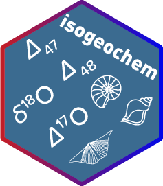

Changelog
Source:NEWS.md
isogeochem 1.1.0
CRAN release: 2022-07-19

Function updates
-
a18_c_H2O()Can now calculate the dolomite/water 18O/16O fractionation factor. -
a18_CO2acid_c()Can now calculate the dolomite/CO2 18O/16O AFF. -
a18...()functions now return meaningful errors. -
d17O_c()Can now take into account a non-zero D17O value for the ambient water. -
mix_d17O()was overhauled. It now allows D17O values as input and specifying the resolution of the output. The output of the function now returns the d17O values as the fourth element in the data frame.
New features
-
d17O_qz()to calculate equilibrium oxygen isotope values for quartz. -
meteoric_watersis a compilation of d17O and d18O values for meteoric waters.
isogeochem 1.0.8

New features
-
D17O()calculates triple oxygen isotope value from d18O and d17O values
Function updates
-
york_plot()returns silently
Minor improvements
- Vignettes reset to the user’s parameters and options
- Updated DOI links
- Readme updates
- Added webpage https://davidbajnai.github.io/isogeochem/
isogeochem 1.0.7

Function updates
- In
temp_D48()the curve_intersect() part was slimmed down - Update to temp_D48() ii: temperatures are now calculated with the “Fiebig21” eq
- Added the “Anderson21” option to D47() and temp_D47()
-
temp_D47()andtemp_D48()both result in a similar data frame (length = 2) if errors are specified -
temp_D47(),temp_D48(), andtemp_d18O()areoptimize-d - Added the “Kim07” eq to “aragonite” in
a18_c_H2O() - Added the “vanDijk18” eq to “siderite” in
a18_c_H2O() - Typo corrected in
a18_H2O_OH(): “Z21-X3LYP” —> “Z20-X3LYP”